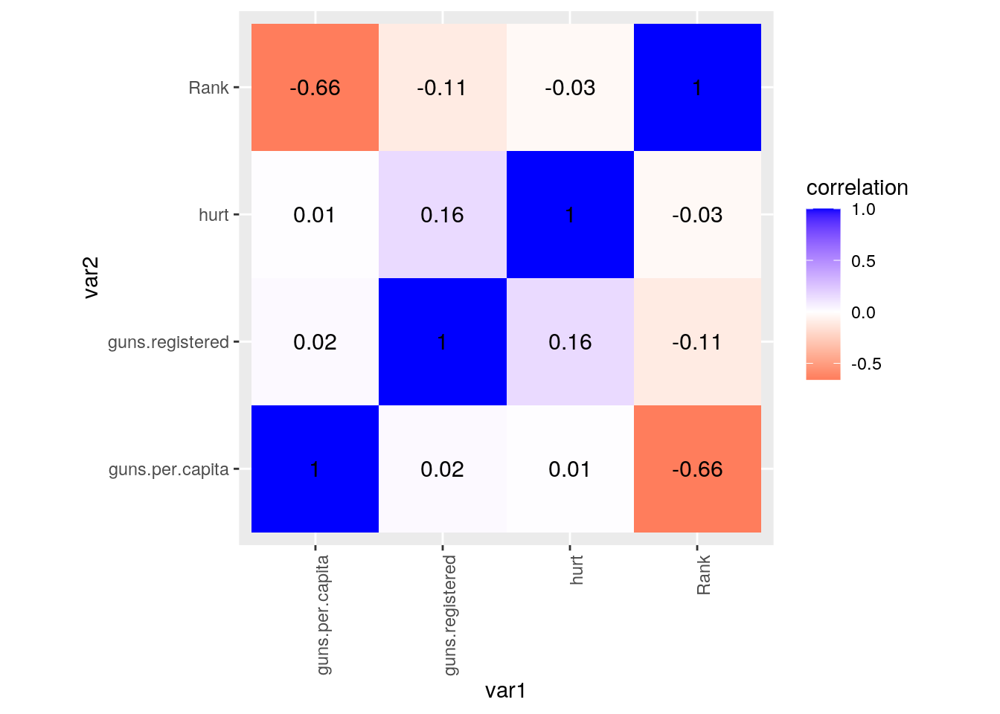
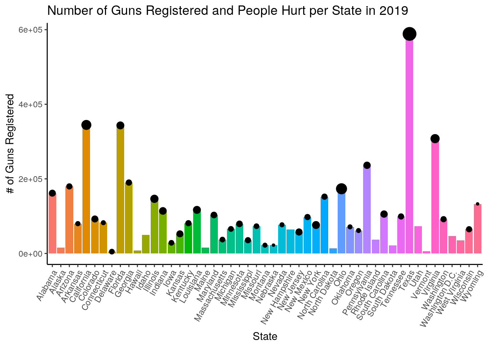
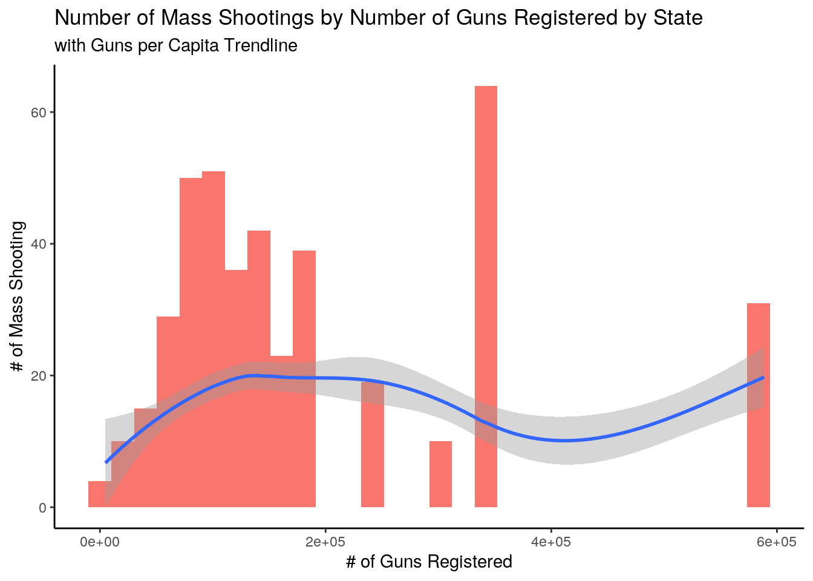
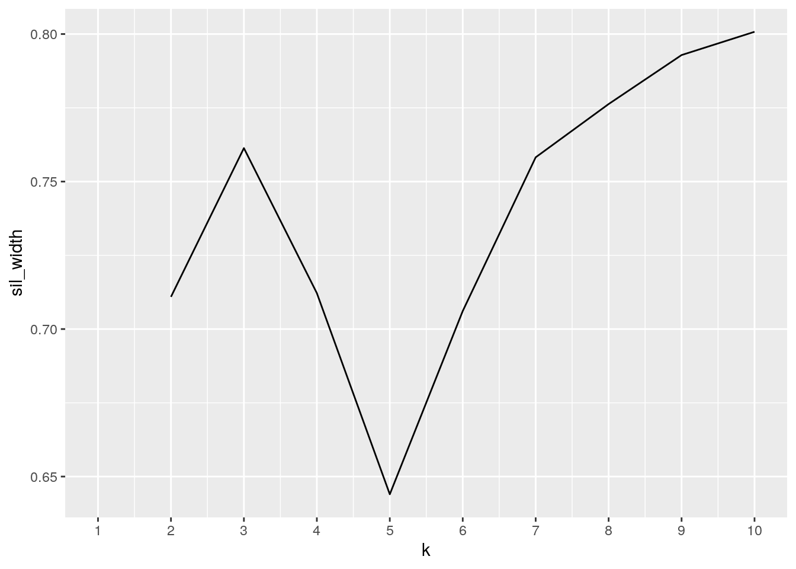
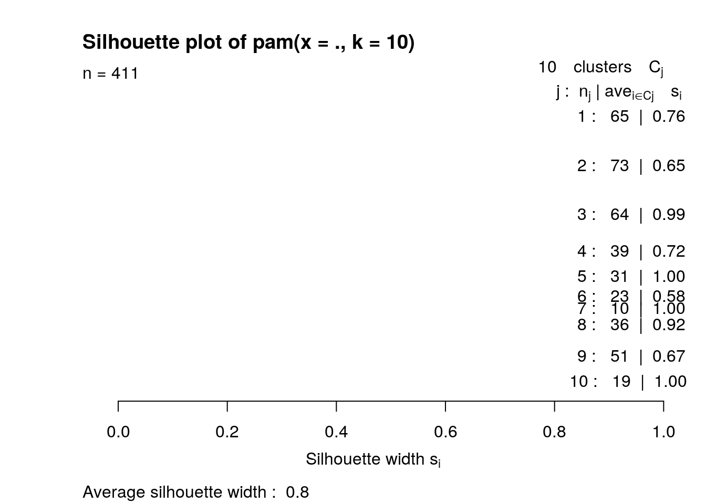

The two datasets used for this data analysis consist of data on mass shootings in 2019 and gun ownership in 2019 by state. This data was sourced from Statista and GunViolenceArchive, respectively. This data analysis will test to see if there are any potential associations between these two variables. If more guns are in circulation in a given population, one might expect a higher occurence of mass shootings. This association is particularly of interest since the state of Texas has the highest gun ownership in the country and as the number continues to increase, one might be concerned about the statistical probability of mass shootings associated with this number.
library(tidyverse)
library(tidyr)
library(dplyr)
guns <- read.csv("guns.csv")
deaths <- read.csv("deaths.csv")
deaths <- deaths %>% pivot_longer(5:6, names_to = "condition",
values_to = "hurt")
deaths <- deaths %>% pivot_wider(names_from = "condition", values_from = "hurt")The 'deaths' dataset containing information on mass shootings was tidied to make the two columns, consisting of number of people killed and the number of people injured, into one column. This groups killings and injuries into the same category of people who are hurt in general. However, for the purposes of simplying code later, this tidying will be undone and returned to the original format.
both <- full_join(deaths, guns)
both <- both %>% rename(killed = X..Killed, injured = X..Injured,
guns.per.capita = X..of.guns.per.capita, guns.registered = X..of.guns.registered)
both <- both %>% mutate(hurt = (killed + injured)) %>% select(-killed,
-injured)A full join keeps all rows from both datasets and inserts NAs where this is missing information, which is what we wanted since we did not want to lose any data. In this case, there are 12 rows in the combined dataset with NAs. These 12 datasets have NAs because there were no mass shootings in these 12 states.
both$State <- replace(both$State, both$State == "District of Columbia",
"Washington D.C.")
both$State <- as.character(both$State)
both$hurt <- as.integer(both$hurt)
both$guns.per.capita <- as.integer(both$guns.per.capita)
both$guns.registered <- as.integer(both$guns.registered)
both %>% select(State, guns.per.capita) %>% arrange(desc(guns.per.capita))## # A tibble: 430 x 2
## State guns.per.capita
## <chr> <int>
## 1 Wyoming 229
## 2 Washington D.C. 68
## 3 New Mexico 46
## 4 New Mexico 46
## 5 New Mexico 46
## 6 New Mexico 46
## 7 New Mexico 46
## 8 New Hampshire 46
## 9 Virginia 36
## 10 Virginia 36
## # … with 420 more rowsboth %>% select(State, guns.registered) %>% arrange(desc(guns.registered))## # A tibble: 430 x 2
## State guns.registered
## <chr> <int>
## 1 Texas 588696
## 2 Texas 588696
## 3 Texas 588696
## 4 Texas 588696
## 5 Texas 588696
## 6 Texas 588696
## 7 Texas 588696
## 8 Texas 588696
## 9 Texas 588696
## 10 Texas 588696
## # … with 420 more rowsboth %>% group_by(State) %>% summarize(n = n()) %>% arrange(desc(n))## # A tibble: 51 x 2
## State n
## <chr> <int>
## 1 California 49
## 2 Illinois 41
## 3 Texas 31
## 4 Louisiana 26
## 5 Maryland 21
## 6 Georgia 19
## 7 Pennsylvania 19
## 8 Missouri 18
## 9 Florida 15
## 10 Ohio 14
## # … with 41 more rowsboth %>% mutate(hurtpergun = (hurt)/guns.per.capita) %>% arrange(desc(hurtpergun))## # A tibble: 430 x 10
## Incident.Date State City.Or.County Address Operations Rank guns.per.capita
## <fct> <chr> <fct> <fct> <fct> <int> <int>
## 1 27-Jul-19 New … Brooklyn 1555 L… N/A 51 3
## 2 28-Jul-19 Cali… Gilroy 7050 M… N/A 44 8
## 3 12-Oct-19 New … Brooklyn 75 Uti… N/A 51 3
## 4 3-Aug-19 Texas El Paso 7101 G… N/A 18 20
## 5 30-Jun-19 New … Bay Shore Farrag… N/A 51 3
## 6 4-Aug-19 Ohio Dayton 419 E … N/A 30 14
## 7 27-Nov-19 New … Bronx E 153r… N/A 51 3
## 8 31-Aug-19 Texas Odessa 8250 T… N/A 18 20
## 9 10-Dec-19 New … Jersey City 223 Ma… N/A 46 6
## 10 29-Oct-19 Cali… Long Beach 2709 E… N/A 44 8
## # … with 420 more rows, and 3 more variables: guns.registered <int>,
## # hurt <int>, hurtpergun <dbl>both %>% filter(State == "Texas")## # A tibble: 31 x 9
## Incident.Date State City.Or.County Address Operations Rank guns.per.capita
## <fct> <chr> <fct> <fct> <fct> <int> <int>
## 1 27-Dec-19 Texas Houston 500 bl… N/A 18 20
## 2 18-Dec-19 Texas San Antonio 2418 S… N/A 18 20
## 3 8-Dec-19 Texas Desoto 200 bl… N/A 18 20
## 4 29-Nov-19 Texas Amarillo 2650 D… N/A 18 20
## 5 4-Nov-19 Texas Houston 5000 b… N/A 18 20
## 6 3-Nov-19 Texas Nacogdoches Sandyl… N/A 18 20
## 7 1-Nov-19 Texas San Angelo 1616 S… N/A 18 20
## 8 26-Oct-19 Texas Greenville 2275 U… N/A 18 20
## 9 20-Oct-19 Texas Port Arthur 1100 b… N/A 18 20
## 10 19-Oct-19 Texas El Paso 3812 T… N/A 18 20
## # … with 21 more rows, and 2 more variables: guns.registered <int>, hurt <int>both %>% summarize(mean_gunsreg = mean(guns.registered, na.rm = T),
n_rows = n(), n_states = n_distinct(State), var = var(guns.per.capita,
na.rm = T), quant = quantile(guns.registered, na.rm = T,
0.75), min = min(guns.registered, na.rm = T), max = max(guns.registered,
na.rm = T), sd = sd(guns.registered, na.rm = T), med = median(hurt,
na.rm = T), cor = cor(hurt, guns.registered, use = "pair"))## # A tibble: 1 x 10
## mean_gunsreg n_rows n_states var quant min max sd med cor
## <dbl> <int> <int> <dbl> <dbl> <int> <int> <dbl> <dbl> <dbl>
## 1 190084. 430 51 178. 236377 4852 588696 148051. 4 0.156both %>% group_by(State) %>% summarize(mean_gunsreg = mean(guns.registered,
na.rm = T), n_rows = n(), n_states = n_distinct(State), var = var(guns.per.capita,
na.rm = T), quant = quantile(guns.registered, na.rm = T,
0.75), min = min(guns.registered, na.rm = T), max = max(guns.registered,
na.rm = T), sd = sd(guns.registered, na.rm = T), sum = sum(hurt,
na.rm = T), cor = cor(hurt, guns.per.capita, use = "pair"))## # A tibble: 51 x 11
## State mean_gunsreg n_rows n_states var quant min max sd sum
## <chr> <dbl> <int> <int> <dbl> <dbl> <int> <int> <dbl> <int>
## 1 Alab… 161641 12 1 0 161641 161641 161641 0 64
## 2 Alas… 15824 1 1 NA 15824 15824 15824 NA 0
## 3 Ariz… 179738 6 1 0 179738 179738 179738 0 33
## 4 Arka… 79841 5 1 0 79841 79841 79841 0 23
## 5 Cali… 344622 49 1 0 344622 344622 344622 0 258
## 6 Colo… 92435 4 1 0 92435 92435 92435 0 22
## 7 Conn… 82400 3 1 0 82400 82400 82400 0 13
## 8 Dela… 4852 2 1 0 4852 4852 4852 0 10
## 9 Flor… 343288 15 1 0 343288 343288 343288 0 74
## 10 Geor… 190050 19 1 0 190050 190050 190050 0 90
## # … with 41 more rows, and 1 more variable: cor <dbl>After tidying and joining both datasets, a few column titles were renamed for a better appearance. Then, in one dataset, the state of Washington D.C. was named as District of Columbia so that was changed to be consistent in state names. Finally, the 'States' column was formatted into "characters" intead of "factors" for data statistics. Firstly, states were arranged by descending guns per capita with Wyoming having the most amount of guns with 229.24 per 100,000 people. States were also arranged by descending guns registered with Texas having the most guns registered of 588696. Next, states were grouped together and then the total occurence of mass shootings was summed together and arranged by descending order with California having the most amount of mass shootings of 98. A new variable of 'hurtpergun' was generated by dividing 'hurt' by 'guns.per.capita'. Then finally, the data was filtered to show only the mass shootings that occured in the state of Texas.
Summary statistics was conducted on the data showing the mean guns registered of 190084.4, 430 total number of rows, 51 number of distinct states and the federal district of Washington D.C. , variance between guns per capita of 176.84, 1st quantile of guns registered of 236377, minimum value of guns registered of 4852, maximum value of guns registered of 588696, standard deviation of guns registered of 148051.2, median hurt of 465, and the correlation between people hurt and guns registered of 0.19. These same summary statistics were conducted again after grouping by state.
library(ggplot2)
cormat <- both %>% select_if(is.numeric) %>% cor(use = "pair")
tidycor <- cormat %>% as.data.frame %>% rownames_to_column("var1") %>%
pivot_longer(-1, names_to = "var2", values_to = "correlation")
tidycor %>% ggplot(aes(var1, var2, fill = correlation)) + geom_tile() +
scale_fill_gradient2(low = "red", mid = "white", high = "blue") +
geom_text(aes(label = round(correlation, 2)), color = "black",
size = 4) + theme(axis.text.x = element_text(angle = 90,
hjust = 1)) + coord_fixed()
both %>% ggplot(aes(State, guns.registered)) + geom_bar(aes(fill = State),
stat = "summary") + theme_classic() + theme(axis.text.x = element_text(angle = 60,
hjust = 1), legend.position = "none") + geom_point(aes(size = hurt)) +
ylab("# of Guns Registered") + xlab("State") + ggtitle("Number of Guns Registered and People Hurt per State in 2019")
both <- both %>% group_by(State) %>% mutate(n_rows = n())
both %>% ggplot(aes(x = guns.registered, fill = n_rows)) + geom_histogram(aes(fill = "red"),
bin = 50) + geom_smooth(aes(y = guns.per.capita)) + ylab("# of Mass Shooting") +
xlab("# of Guns Registered") + theme_classic() + theme(legend.position = "none") +
ggtitle("Number of Mass Shootings by Number of Guns Registered by State",
subtitle = "with Guns per Capita Trendline") The first plot is a correlation heatmap of all variables of the dataset. Rank and guns per capita had the highest correlation of -0.66. However, these variables were already pre-associated as the rank variable was based upon high to low guns per capita. Hurt and guns registered had the second highest correlation of 0.16. This is not a strong correlation and thus one can not say these two variables are associated.
The second plot is a bargraph that shows the number of guns registered for each state and the number of people hurt in each state, scaled in proportion to the total number of people hurt in 2019. In general, we can see that most states that have a higher number of guns registered have a higher number of people hurt. Specifically, if we look Texas and California that have some of the highest numbers of guns registered, we can see that they have the most people hurt in the country.
The third plot is a histogram that shows the number of mass shootings by number of guns registered. There is also a trendline that shows the number of guns per capita. There is a rough trend that the less number of guns registered and guns per capita, the fewer number of mass shootings there are. With the exception of the right most data point of Texas with the most number of guns registered, one could argue that there is an expontential relationship between number of guns registered and number of mass shootings.
library(cluster)
both2 <- both %>% na.omit %>% select(hurt, guns.per.capita, guns.registered) %>%
as.data.frame()
sil_width <- vector()
for (i in 2:10) {
pam_fit <- pam(both2, k = i)
sil_width[i] <- pam_fit$silinfo$avg.width
}
ggplot() + geom_line(aes(x = 1:10, y = sil_width)) + scale_x_continuous(name = "k",
breaks = 1:10)
pam1 <- both2 %>% pam(k = 10)
pamclust <- both2 %>% mutate(cluster = as.factor(pam1$clustering))
library(plotly)
pamclust %>% plot_ly(x = ~hurt, y = ~guns.per.capita, z = ~guns.registered,
color = ~cluster, type = "scatter3d", mode = "markers")pamclust %>% group_by(cluster) %>% summarize_if(is.numeric, mean)## # A tibble: 10 x 4
## cluster hurt guns.per.capita guns.registered
## <fct> <dbl> <dbl> <dbl>
## 1 1 5.09 18.9 150047.
## 2 2 4.86 11.7 71317.
## 3 3 5.19 9.88 344309.
## 4 4 5.23 17.6 182488.
## 5 5 7.06 20 588696
## 6 6 4.83 11 33519.
## 7 7 6.2 36 307822
## 8 8 5.03 22.1 116050.
## 9 9 4.92 19.7 100792
## 10 10 5.11 18 236377both %>% slice(pam1$id.med)## # A tibble: 4 x 10
## # Groups: State [4]
## Incident.Date State City.Or.County Address Operations Rank guns.per.capita
## <fct> <chr> <fct> <fct> <fct> <int> <int>
## 1 30-Jun-19 Cali… Yucaipa 12700 … N/A 44 8
## 2 7-Jul-19 Illi… Chicago 600 bl… N/A 40 11
## 3 17-Feb-19 Loui… New Orleans Tulane… N/A 11 24
## 4 3-May-19 Texas Dallas 5400 C… N/A 18 20
## # … with 3 more variables: guns.registered <int>, hurt <int>, n_rows <int>plot(pam1, which = 2) A PAM clustering was conducted on the variables 'hurt', 'guns.per.capita', and 'guns.registered'. First we chose the number of clusters based upon average silhouette width because the higher the silhouette width is the better as clusters are more cohesive and more separated. Looking at the plot, we see that 10 clusters is the best. After clustering the data, we can see that the clusters are relatively separated with cluster 5 being those with a large number of guns registered and cluster 6 being those with a small number of guns registered. We also found the final medoids of our clusters with the state of New Jersey being representative of cluster 1 and the state of California being representative of cluster 10. With an average silhouette width of 0.8, we can say that a strong structure has been found.